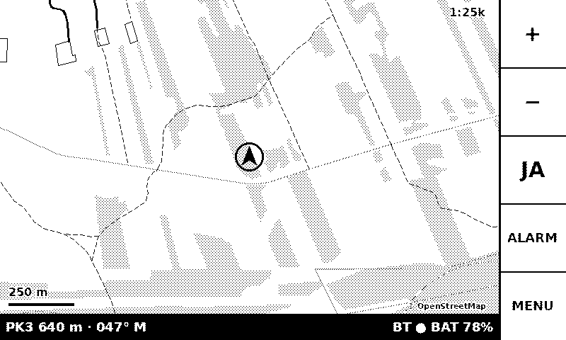

stickyTAK
E-paper device and a plugin for ATAK-CIV 5.6 and newer
A backup ATAK screen worn on the kit. It shows the map, your position, markers and alerts, and keeps the last state when the phone dies.
Why it exists
At a competition water got into a phone running ATAK and the team lost navigation. One phone is a single point of failure.
stickyTAK is a second screen. The phone stays under the jacket, and a reTerminal Sticky clipped to the kit shows what you need on the move. When the phone dies, the Sticky keeps the map and the last mission state stored on a microSD card.
How it works
The ATAK plugin sends your position, markers, routes and alerts to the Sticky over Bluetooth. It builds the map from OpenStreetMap data and sends it as a package: an area with a 10 km radius takes 196 KiB and transfers in about 2 seconds.
The status bar shows distance and bearing to the next route point. From the Sticky you can send an alert and drop a marker at your position.
Rain and gloves
A touch screen is useless in rain: in a trial, water produced about 80 false touches a minute. Every function can therefore be reached with the physical buttons alone, which work in rain and with gloves.
Status
Stage 1 is being tested on the device: map, position, markers, alerts and updates over Wi-Fi. A single plugin package loads on ATAK-CIV 5.6, 5.7 and 5.8.
Stage 2 adds chat. In stage 3 the Sticky connects to a TAK server by itself, over Wi-Fi, with no phone.
The screenshot below is rendered on a computer, pixel for pixel the same as on the device.
Screenshots
